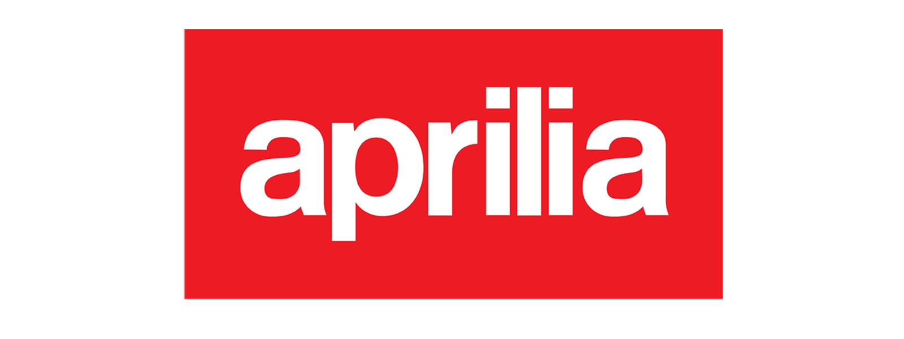
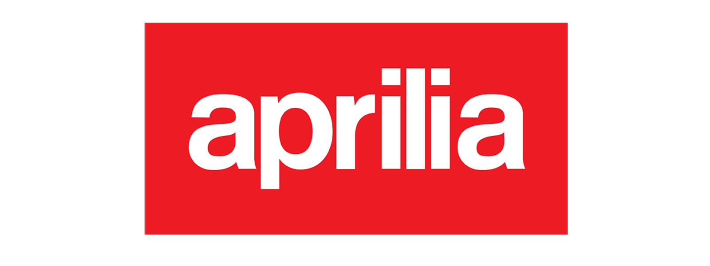
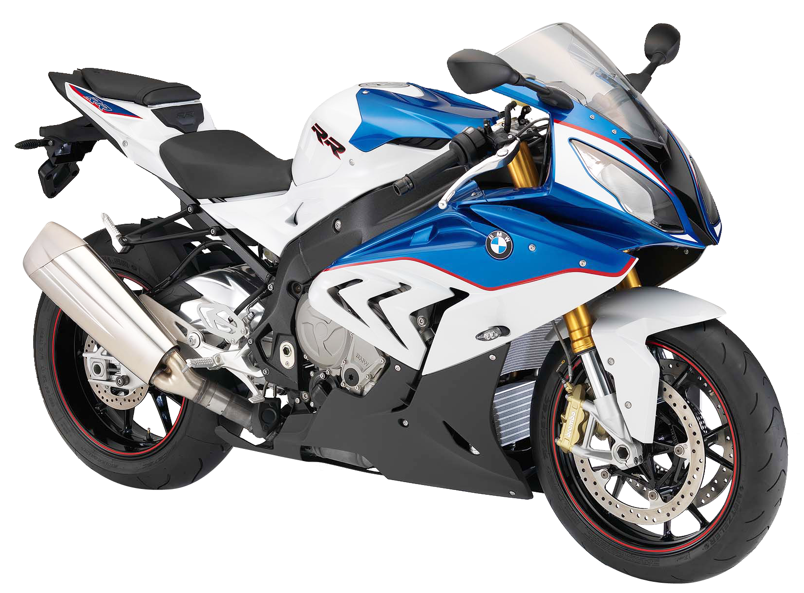
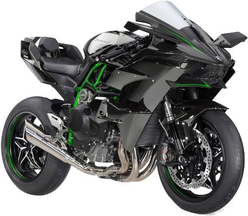
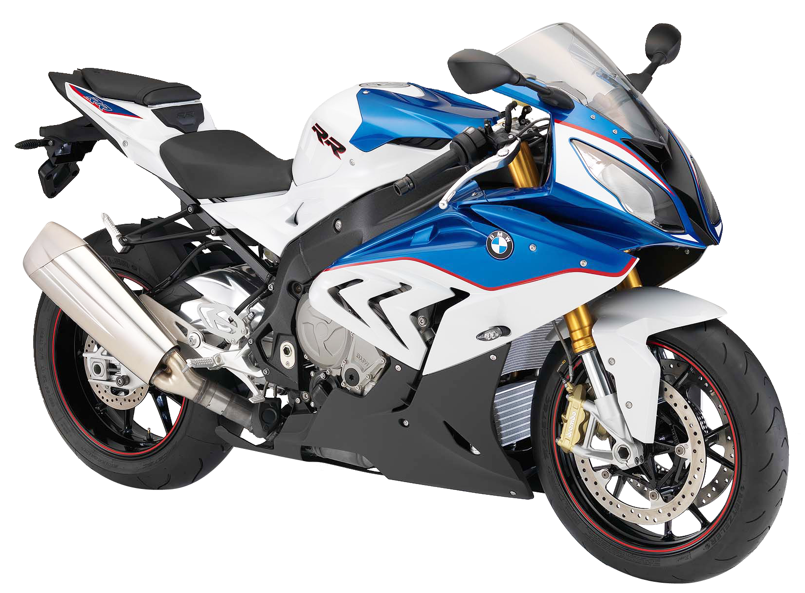
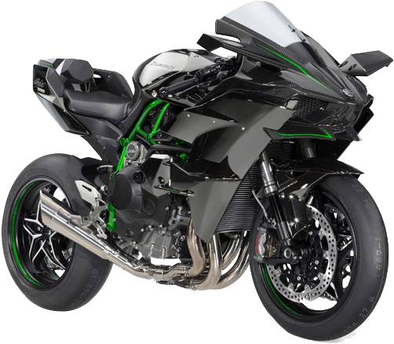

Welcome !
"Two wheels move the body, but the soul drives the journey."
Motorcycle designed and optimized for speed, acceleration, braking, and cornering on asphalt concrete race tracks and roads. Motorcycles are versatile and may be put to many uses as the rider sees fit.
Engineering Two Wheeler for future generations
According to “Premium Motorcycles Market Forecast & Opportunities in India, 2017”,Indian premium motorcycle market will observe phenomenal escalation in near future. Theviewpoint for the Premium motorcycles seems very promising as the overall consumerspending and high net worth individual (HNI) population is on rise. Newer and highlydeveloped premium motorcycle models are available at quite a few number of companyoutlets and the visibility for the same has increased many folds since 2007 due to the increaseof number of players in the market where Engine capacity with brand has an importantsignificance to the buyers.
Models

 


Features
Discover the features of SuperBikes
Superbike racing is a category of motorcycle racing that employs highly modified production motorcycles.Superbike racing motorcycles are derived from standard production models, so for a bike to be eligible, the manufacturer must first homologate the model and manufacture the required number of roadgoing machines. While rules vary from series to series, in general the motorcycles must maintain the same profile as their roadgoing counterparts, with the same overall appearance as seen from the front, rear and sides. In addition, the frame cannot be modified. Teams may modify some elements of the bike, including the suspensions, brakes, swingarm, and the diameter and size of the wheels.Superbike racing motorcycles must have four-stroke engines of between 850 cc and 1200 cc for twins, and between 750 cc and 1000 cc for four cylinder machines.The restriction to production models distinguishes Superbike racing from MotoGP racing, which uses prototype machines that bear little resemblance to production machines. This is somewhat similar to the distinction in car racing between sports cars and Formula One cars, though the performance gap between Superbike and MotoGP racing is much smaller.
Gallery
 





Contact Us
Get in touch with us for more information.
We value your feedback and inquiries. Whether you have questions about our products or services, need assistance with an order, or simply want to share your thoughts, we're here to help. Our dedicated team is committed to providing exceptional customer support and ensuring that your experience with us is nothing short of excellent. Feel free to reach out to us using the contact form below, and we'll get back to you as soon as possible. Your satisfaction is our priority, and we look forward to assisting you in any way we can.
(This website is the TASK 1 in WEB DEVELOPMENT internship offered by Prodigy info tech)